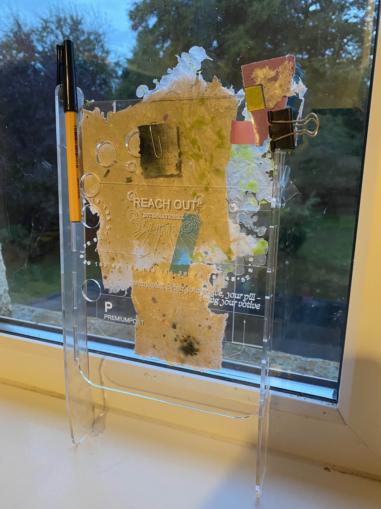
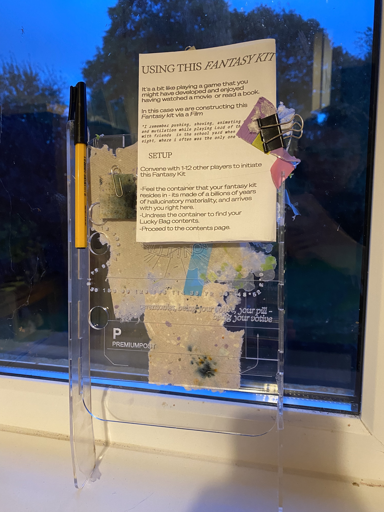

Cian's Sandbox
August-October
Background
a few keys words: vitrification, data, simulation, baudrillard, hypo/hyperfiction, seduction, frictionlessness, control, workspace as forensics space, Paper - undressing, unwrapping, there’s something interesting in relation to this act becoming erotic, trying to make composites from waste acrylic, with photos
Acrylic experiments
acrylic composite experiments
replicating the logic or set of interests being pursued in paper making, and the hdpe, the material composing the fantasy kit object/assemblage. Lots of issues, will require improving the means of producing it.
ForensicWorkspaceFrames
Thinking through ideas relating to language, language being informed by elements of the built environment such as furniture, and type design. Holes akin to those you might find in an ikea like work/storage space. Yet i was thinking through the use of these in the context of a fictional investigeatiopn
 FantasyKit2
Engaging with ideas of control in the deleuze, burroughs, bateson, type -desubjectivation -postcapitalist desire -hypo/hyperfiction - hyper structures. Combining formats of lucky bags, personal holdall's like tote/hand bags, and purses to explore ideas around fiction, hyper structures, and strategising deploying cognitive estrangement
Fantasy Kit Incident Report (Front/ Back)
Fantasy Kit User Guide (Front/ Back)
Fantasy Kit Laser cutting file (interior/exterior)
FantasyKit2
using polyproylene composite, warping and shaping it through heating and melting/welding at points of interaction/joining - quick solution
Paperenquiry#4
reiterating paper production - integrating uses of embossing, and integrating more predeveloped structures into the fabric
luckybags>+November
Some documentation on recent material research, conluded here with notes/conceptualisation on the function of fantasy within cultural designing
Notes/ recent conceptualising in the form of a doc on desire. Download